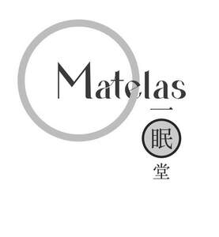

Trade Mark Journal No.2025/021 23 May 2025
UK00004198694 5 May 2025 (20,24)

- Class 20
- Bedding for nursery cots [other than bed linen]; Bedding for cots [other than bed linen]; Beds, bedding, mattresses, pillows and cushions; Bedding, except linen; Bed mattresses; Bath pillows; Pillows; Beds; Mattresses; Feather beds; Furniture incorporating beds; Sofa beds; Scented pillows; Beds for animals; Infant beds; Soft furnishings [cushions]; Bamboo pillows; Nap mats [cushions or mattresses]; Futon mattresses [other than childbirth mattresses]; Beds of wood; Furniture and furnishings; Storage boxes for pillows [furniture]; Sleeping mats for camping [mattresses]; Divan beds; Cushions [furniture]; Bed slats; Nursery furniture; Beds for pets; Camping mattresses; Foam camping mattresses; Bedroom furniture; Latex pillows; Air pillows; Beds for household pets; Bathroom furniture; Foam mattresses; Mattress pads; Inflatable pet beds; Furniture being convertible into beds; Maternity pillows; Furniture for bathrooms; Travel pillows; Slatted furniture; Dog beds.
- Class 24
- Comforters (bedding); Quilted blankets [bedding]; Quilt bedding mats; Textile goods for use as bedding; Bed linen and blankets; Comforters for beds; Linens; Textile fabrics for use in the manufacture of bedding; Bed clothes and blankets; Bed blankets; Blankets (Bed -); Bed linen; Linen for the bed; Linen (Bed -); Canopies (bed linen); Silk bed blankets; Bed clothes; Ticks (mattress and pillow coverings); Bed blankets made of cotton; Valances for beds; Crib sheets; Bedsheets; Fabric bed valances; Bedspreads; Household linens; Bed coverings; Valanced bed sheets; Bath sheets (towels); Coverlets [bedspreads]; Bed linen and table linen; Bed quilts; Textile piece goods for making bedding covers; Fitted bed sheets; Bed valances; Bath linen, except clothing; Duvets; Cot blankets; Cot sheets; Sofa blankets; Cotton blankets; Furnishing fabrics; Textile fabrics for use in the manufacture of beds; Bath linen; Towels of textiles; Infants' bed linen; Bed pads; Bed sheets of paper; Protective loose covers for mattresses and furniture; Bed canopies; Pillowcases; Pillowcases [pillow slips]; Bed blankets made of man-made fibres; Bath sheets; Bed linen made of non-woven textile material; Flat bed sheets; Bathroom towels; Linen; Cot bumpers [bed linen]; Silk fabrics for furniture; Furnishing and upholstery fabrics; Fabrics for the manufacture of furnishings; Textiles for furnishings; Coverings for furniture.
YU JEN LIN